Досега изучавахме движението на телата спрямо инерциална отправна система, което се описва от трите принципа на механиката. На практика обаче често се налага движението да се разглежда спрямо неинерциална отправна система. Неинерциални са всички отправни системи, които се движат с ускорение спрямо дадена инерциална отправна система. Земната повърхност, както вече беше отбелязано, също е неинерциална отправна система. Ще установим връзката между кинематичните величини — скорост и ускорение, и динамичните величини сили, които описват движението в инерциалните и в неинерциалните отправни системи.
Абсолютна, относителна и преносна скорост
Нека К е инерциална отправна система, която условно ще приемем, че се намира в покой. Неинерциалната отправна система К’ се движи с ускорение спрямо К. Ще разгледаме движението на материална точка $M$ спрямо двете отправни системи (Фиг. \ref{fig:6.1}). Скоростта $\vec v_a$ на материалната точка, измерена в инерциалната отправна система К, се нарича абсолютна скорост. Скоростта $\vec v_r$ на точката спрямо неинерциалната отправна система К’ се нарича относителна скорост. Връзката между двете скорости се дава с векторното равенство $$\vec v_a = \vec v_r + \vec v_e $$
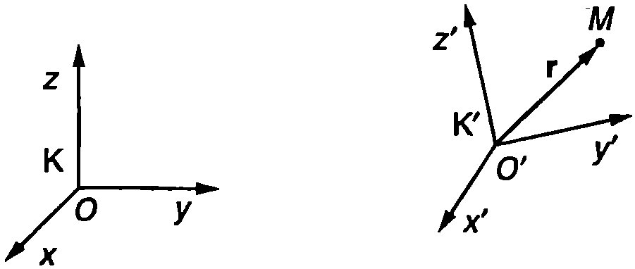
`Фиг. 6.1`
където $\vec v_e$ е преносната скорост. За да определим преносната скорост $\vec v_e$, трябва да се абстрахираме от относителното движение на материалната точка (мислено да го прекратим). Тогава $\vec v_e$ е скоростта спрямо К-системата на геометричната точка от К-системата, в която сме “замразили” в дадения момент материалната точка $M$. Наблюдател от К-системата може да измери относителната скорост $\vec v_r$, ако мислено прекрати (замрази) преносното движение (движението на К’) и по правилата на кинематиката определи $\vec v_r$. Уравнение \eqref{eq:6.1} показва, че абсолютната скорост е геометрична сума от относителната и преносната скорост.
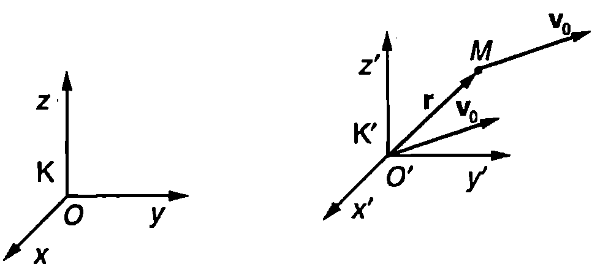
Когато неинерциалната отправна система К' се движи постъпателно със скорост $\vec v_0$, преносната скорост на материалната точка $M$ e $v_e = v_0$
`Фиг. 6.2`
На Фиг. \ref{fig:6.2} е показан частният случай, когато системата К’ се движи спрямо К постъпателно, с променлива по големина скорост $\vec v_0$. При постъпателно движение всички точки от К’ се движат с еднаква скорост $\vec v_0$. Следователно преносната скорост е $\vec v_e = \vec v_0$
Произволно движение на неинерциалната отправна система К’ може да се разглежда като съставено от две движения: постъпателно движение със скорост $\vec v_0$ и въртене с ъглова скорост $\vec\omega$ около моментна ос, минаваща през началото О’ (Фиг. \ref{fig:6.3}).
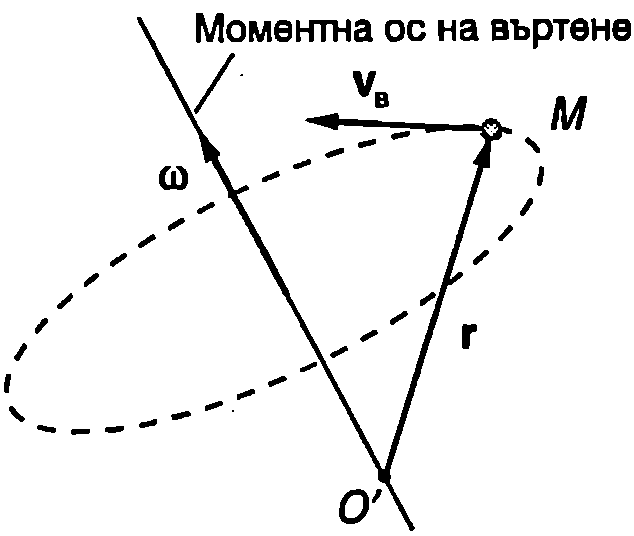
`Фиг. 6.3`
Точката от К’-системата, през която в даден момент минава материалната точка $M$, се върти със скорост $\vec v_\text{в} = \vec\omega\times\vec r$ (вж. уравнение \eqref{eq:3.10} на стр.26), където $\vec r$ е радиус-векторът на точка $M$ спрямо К’-системата.
Следователно при произволно движение на К’-системата преносната скорост е $$\vec v_e = \vec v_0 + \vec\omega \times\vec r $$
Теорема на Кориолис
Френският учен Густав-Гаспар Кориолис (1792-1843) доказва, че абсолютното ускорение $\vec a_a$ на материална точка, измерено в инерциална отправна система, е геометрична сума от относителното ускорение $\vec a_r$, преносното ускорение $\vec a_e$, и кориолисовото ускорение $\vec a_c$ $$\vec a_a = \vec a_r + \vec a_e + \vec a_c $$ Уравнение \eqref{eq:6.3} изразява теоремата на Кориолис. Относителното ускорение $\vec a_r$, се определя като се абстрахираме от преносното движение, което е равносилно да приемем К’-системата за неподвижна, и по правилата на кинематиката да определим относителното (спрямо К’-системата) ускорение $\vec a_r$, (както $\vec v_r$) на материалната точка.
Ускорението $\vec a_e$ е свързано единствено с преносното движение. Ако в дадения момент материалната точка $M$ беше неподвижна спрямо К’-системата (“замразяваме” относителното движение), тя щеше да се движи с ускорение $\vec a_e$, спрямо К-системата. Ще определим преносното ускорение в два важни за практиката частни случая.
-
Системата К’ се движи постъпателно с ускорение $\vec a_0$. При постъпателно движение всички точки от К’ се движат с едно и също ускорение $\vec a_0$, т.е. $\vec a_e =\vec a_0$.
-
Началото О’ е неподвижно или извършва праволинейно равномерно движение ($\vec a_0 = 0$), а К’-системата се върти с постоянна ъглова скорост $\omega$ около ос, минаваща през началото О’ (Фиг. \ref{fig:6.4}). Преносното движение на геометричната точка $M$ от К’-системата е движение по окръжност. Разлагаме нейния радиус-вектор $\vec r$ на две компоненти: $\vec r = \vec r_{||} + \vec r_\perp$, където векторът $\vec r_{||}$ е успореден, а $\vec r_\perp$ — перпендикулярен на оста на въртене. Преносното ускорение $\vec a_e$, е равно на центростремителното ускорение на точка $M$ (вж. уравнение \eqref{eq:3.8} на стр. 25)
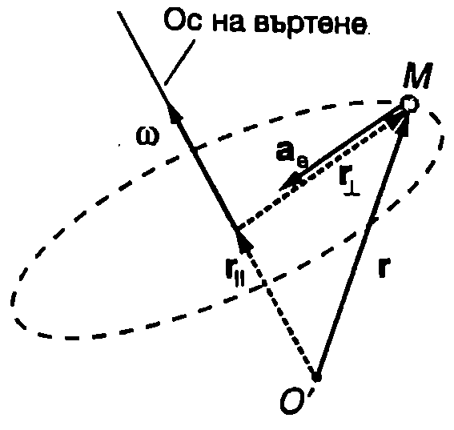
`Фиг. 6.4`
$$\vec a_e = \vec a_n = -\omega^2\vec r_{\perp} $$
Кориолис доказва, че освен относителното и преносното ускорение съществува още едно ускорение, което зависи както от относителното, така и от преносното движение (въртене). В негова чест това ускорение е било наречено кориолисово ускорение. Кориолисовото ускорение $a$ е равно на $$\vec a_c = 2\vec\omega\times\vec v_r $$ където $\vec\omega$ е ъгловата скорост, с която се върти неинерциалната отправна система, а $\vec v_r$ е относителната скорост на материалната точка.
Ще подчертаем, че трите ускорения - относително, преносно и кориолисово, на които се разлага абсолютното ускорение $\vec a_a$, се измерват от наблюдател в инерциалната отправна система К. За наблюдател от К’-системата съществува единствено ускорението $\vec a_r$.
Пример 6.1
Диск се върти с постоянна ъглова скорост $\omega = 2$ rad/s (Фиг. \ref{fig:6.5}а). По радиален улей се търкаля малко топче с постоянна скорост $v_r = 0,!75$ m/s спрямо улея. Определете големината $a_a$ на абсолютното ускорение на топчето, когато то се намира на разстояние $r = 1$ m от центъра на диска. \end{psexample}
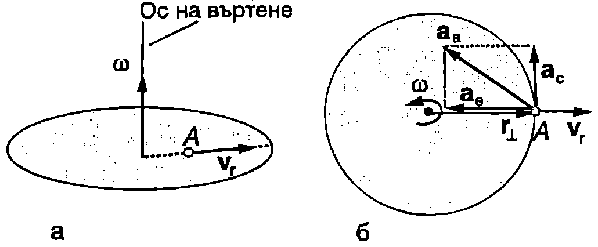
`Фиг. 6.5`
Решение
Спрямо земната повърхност, коя то ще приемем за инерциална отправна система К, топчето извършва преносно и относително движение. Относителното движение. (спрямо неинерциална отправна система К’, свързана с диска) е с постоянна скорост $\vec v_r$. Следователно относителното ускорение е нула ($\vec a_r = 0$). Преносното движение е въртене с постоянна ъглова скорост $\vec\omega$. На него съответства преносно ускорение, което е равно на центростремителното ускорение на точка $A$ от диска с радиус-вектор $\vec r$, през която в дадения момент преминава топчето: $\vec a_e = \vec a_n = -\omega^2\vec r_\perp$ (Фиг. \ref{fig:6.5}б). Големината на преносното ускорение е $$a_e= \omega^2r = (2~\mathrm{rad/s})^2(1~\mathrm{m}) = 4~\mathrm{m/s^2}.$$
Тъй като топчето извършва едновременно относително и преносно движение, то има кориолисово ускорение $\vec a_c = 2\vec\omega\times\vec v_r$. Големината на кориолисовото ускорение е $$a_c = 2\omega v_r = 2(2~\mathrm{rad/s}) (0,!75~\mathrm{m/s}) = 3~\mathrm{m/s^2},$$
където е отчетено, че векторите $\vec\omega$ и $\vec v_r$ са взаимно перпендикулярни (Фиг. \ref{fig:6.5}а). Посоката на вектора $\vec a_c$ определяме по правилото за векторно произведение (на дясната ръка). Абсолютното ускорение на топчето е $\vec a_a = \vec a_e + \vec a_c$. Както се вижда от Фиг. \ref{fig:6.5}б, векторите $\vec a_e$ и $\vec a_c$ са взаимно перпендикулярни. От векторния триъгълник (Фиг. \ref{fig:6.5}б) с помощта на питагоровата теорема определяме големината на абсолютното ускорение $$a_a = \sqrt{a_e^2 + a_c^2} = 5~\mathrm{\frac{m}{s^2}}.$$
Инерчни сили
Нека в уравнението на втория принцип на механиката, записано за движението на материална точка в инерциалната отправна система К, заместим абсолютното ускорение $\vec a_a$ с неговите съставящи, съгласно с теоремата на Кориолис \eqref{eq:6.3} $$\vec F = m \vec a_a = m\vec a_r + m\vec a_e + m\vec a_c $$ където $\vec F$ е резултантната на всички сили, действащи на материалната точка. Записваме уравнение \eqref{eq:6.6} във вида $$\vec F + (- m\vec a_e - m\vec a_c) = m \vec a_r $$ От дясната страна на равенството стои произведението от масата и относителното ускорение, т.е. ускорението на материалната точка, измерено в неинерциалната отправна система К’. Ако К’ беше инерциална отправна система, в нея щеше да е в сила вторият принцип на механиката, т.е. $m\vec a_r = \vec F$, където $\vec F$ е резултантната на всички сили. Уравнение \eqref{eq:6.7} обаче показва, че вторият принцип не е в сила за неинерциалната система К’ - в лявата страна на това уравнение освен силата $\vec F$ влизат и двата члена в скобите. Ако разглеждаме тези два члена като сили $$\vec F_e = -m \vec a_e; $$ $$\vec F_c = -m \vec a_c, $$ уравнение \eqref{eq:6.7} добива вида $$\vec F + \vec F_e + \vec F_c = m \vec a_r $$ Силите $\vec F_e = -m \vec a_e$ и $\vec F_c = -m \vec a_c$ се наричат инерчни сили. След въвеждането на инерчните сили вторият принцип на механиката може да се формулира в по-общ вид, така че да остава в сила и в неинерциална отправна система: произведението от масата и ускорението на материална точка е равно на векторната сума от всички сили, включително и инерчните, които действат на материалната точка.
Преносна инерчна сила при постъпателно движение
Инерчната сила $\vec F_e = -m\vec a_e$, която е свърза на с преносното движение, се нарича преносна инерчна сила. Ако неинерциалната отправна система се движи постъпателно с ускорение $\vec a_0$, тогава преносното ускорение е $\vec a_e = \vec a_0$. Инерчната сила $$\vec F_e = -m \vec a_0 $$ е насочена в противоположна на ускорението $\vec a_0$ посока. Например при натискане на спирачките автобусът и пътниците в него започват да се движат закъснително спрямо инерциалната отправна система, свързана със земната повърхност, с ускорение $\vec a_0$, насочено в противоположната на движението посока. Наблюдател, намиращ се край пътя, ще забележи, че предметите, които не са добре закрепени, продължават да се движат напред по инерция - някои пътници могат да си ударят главите в предните седалки. От гледна точка на наблюдател от автобуса обаче картината е по-различна. За него автобусът през цялото време е в покой. При натискане на спирачките възникват инерчни сили, насочени напред. Всички движения на телата вътре в автобуса се извършват под действие на инерчните сили.
Пример 6.2
Топче е закачено на нишка за тавана на кабината на самолет. Когато самолетът се засилва по пистата за излитане, нишката се отклонява на ъгъл $\alpha$ от вертикалата. Определете ускорението $\vec a_0$ на самолета. \end{psexample}
Решение
Най-напред ще разгледаме задачата в инерциална отправна система, свързана със земната повърхност. На топчето действат две сили: силата на тежестта $m\vec g$ и силата на опъване на нишката $\vec T$ (Фиг. \ref{fig:6.6}а). Под тяхното съвместно действие топчето се движи заедно със самолета с ускорение $\vec a_0$, насочено хоризонтално. Записваме уравнението на втория принцип на механиката във векторен вид $$\vec T + m\vec g = m\vec a_0$$
Записваме това векторното уравнение по компоненти (Фиг. \ref{fig:6.6}а): $$\text{по }x: T\sin\alpha = ma_0;\text{ по }y: T\cos\alpha -mg = 0,$$ откъдето определяме големината на ускорението $$a_0 = g\tan\alpha.$$
Нека сега преминем в неинерциалната отправна система, свързана със самолета. На топчето действат три сили (Фиг. \ref{fig:6.6}б): силата на опъване на нишката $\vec T$, силата на тежестта $m\vec g$ и преносната инерчна сила $\vec F_e = -m\vec a_0$. Спрямо самолета топчето е в покой. Условието за равновесие е: $\vec T+ m\vec g + \vec F_e = 0$. Записваме това векторно уравнение по компоненти: $$\text{по }x: T\sin\alpha - ma_0=0;\text{ по }y: T\cos\alpha -mg = 0,$$ откъдето определяме ускорението $a_0 = g\tan\alpha$.
Центробежна инерчна сила
Когато неинерциалната отправна система се върти с постоянна ъглова скорост $\omega$ преносното ускорение се изразява с уравнение \eqref{eq:6.4}: $\vec a_e = \vec a_n = -\omega^2\vec r_\perp$. Преносната инерчна сила в този случай е $$\vec F_e = -m \vec a_e = m\omega^2 \vec r_\perp $$ Тя е насочена навън, перпендикулярно на оста на въртене (Фиг. \ref{fig:6.7}). Нарича се центробежна сила, тъй като се стреми да отдалечи материалната точка от оста на въртене.
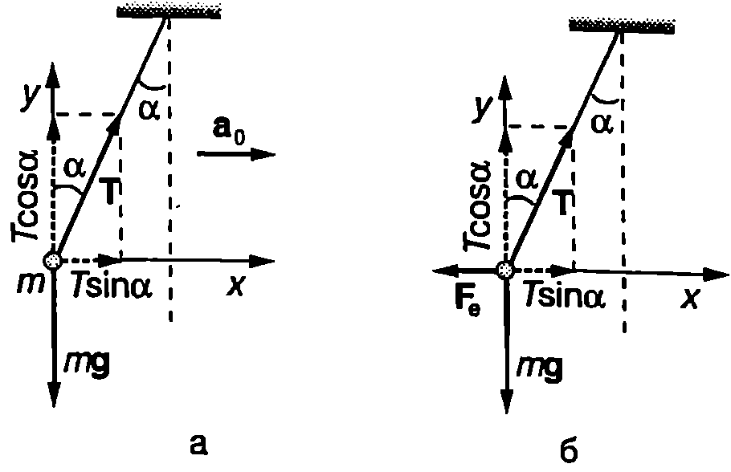
`Фиг. 6.6`
Пример 6.3
При седиментация (утаяване) на суспенсии и емулсии на частиците (червени кръвни телца, макромолекули, нуклеинови киселини, твърди частици и др.) действат силата на тежестта, архимедовата сила и силата на съпротивление, която е правопропорционална на скоростта на частицата ($\vec F = -k\vec v$, където $k$ е коефициент на пропорционалност). При нормални условия скоростта на седиментация е много малка. Тя може рязко да се увеличи, ако епруветка с емулсия (суспенсия) се постави в ултрацентрофуга, въртяща се с голяма ъглова скорост.
Колко пъти ще нарастне скоростта на седиментация, ако ултрацентрофугата извършва 50 000 оборота в минута? Радиусът на въртене е $r = 10$ cm. \end{psexample}
Решение
Нека утаяването се извършва под действие на силата на тежестта. Скоростта на утаяващата се частица става постоянна, когато силата на тежестта се уравновеси от архимедовата сила $F_A = \rho V g$ ($\rho$ е плътността на дисперсионната среда, $V$ е обемът на частицата) и от силата на съпротивление (Фиг. \ref{fig:6.8}a) $$mg=\rho Vg = \rho Vg + kv,$$ където $\rho_0$ е плътността на частицата. От това уравнение определяме постоянната скорост на седиментация $$v = \frac{(\rho_0 - \rho)Vg}{k}.$$
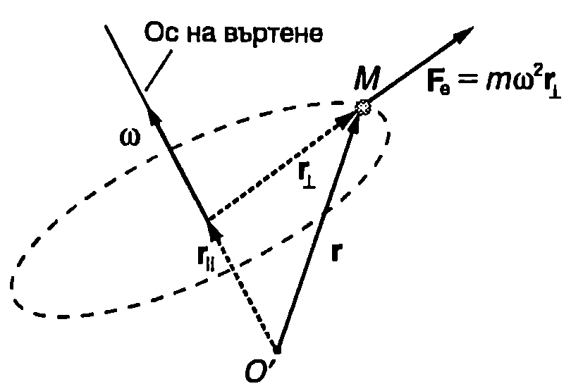
`Фиг. 6.7`
Да поставим сега епруветката с препарата в ултрацентрофугата. Във въртящата се неинерциална отправна система, свързана с центрофугата, на частицата действа центробежна инерчна сила $\vec F_e = m\omega^2 \vec r$ (Фиг. \ref{fig:6.8}б), която е много по-голяма от силата на тежестта. Затова можем да пренебрегнем силата на тежестта и да смятаме, че утаяването се извършва под действие на центробежната инерчна сила. Скоростта на седиментация $v_1$ в този случай можем да определим, като заместим в получената формула за седиментация под действие на силата на тежестта земното ускорение $g$ с преносното ускорение $\omega^2 r$. Получаваме $$v_1 = \frac{(\rho_0-\rho)V\omega^2 r} k = \frac{\omega^2 r}g v = 2,!7.10^5 v$$ т.е. в ултрацентрофугата скоростта на седиментация нараства близо 300 000 пъти.
Кориолисова сила
Когато материална точка се движи спрямо въртяща се отправна система, възниква кориолисова инерчна сила $$\vec F_c = -m \vec a_c = -2 m\vec\omega\times\vec v_r = 2 m\vec v_r \times\vec\omega. $$ Както се вижда от формула \eqref{eq:6.13}, двете необходими условие за възникване на кориолисови сили са:
-
Неинерциалната отправна система да се върти ($\vec\omega \neq 0$).
-
Материалната точка да се движи спрямо неинерциалната отправна система ($\vec v_r \neq 0$).
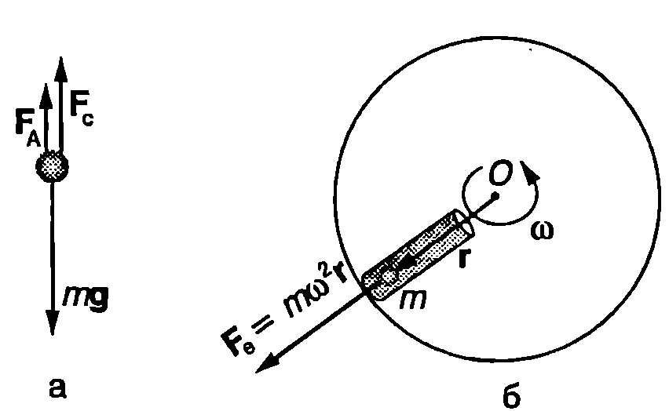
`Фиг. 6.8`
Например, ако сме неподвижни във вагон, който навлиза в завой, действа ни центробежна инерчна сила. Ако обаче в този момент се движим по коридора, ще бъдем подложени и на действието на кориолисова сила. Затова при завой е по-трудно да запазим равновесие, ако се движим, отколкото ако сме в покой.
Кориолисови сили не действат, ако материалната точка се движи успоредно на оста на въртене, тъй като в този случай векторите $\vec v_r$ и $\vec\omega$ са колинеарни, поради което векторното им произведение е нула. От формула \eqref{eq:6.13} също следва, че кориолисовата сила винаги е перпендикулярна на относителната скорост.
Още веднъж специално ще подчертаем, че инерчни сили действат само в неинерциални отправни системи. Затова понякога ги наричат фиктивни'' сили. Действително, в нютоновата механика силите са мярка за непосредственото действие на едно тяло върху друго тяло (при контакт или от разстояние) и на всяко действие съответства равно по големина и противоположно по посока противодействие. Инерчните сили обаче не описват вид взаимодействие между телата, затова може да се приемат за фиктивни сили. Може да се смята, че те изкуствено се въвеждат, за да се прилага вторият принцип на механиката и в неинерциални отправни системи. Инерчните сили изчезват”, когато се премине в инерциална отправна система. Едновременно с това не трябва да се забравя, че за наблюдател от неинерциалната отправна система това са съвсем реални сили, които той може да измери експериментално например с пружинни везни (динамометър).
Пример 6.4
Гладък хоризонтален диск се върти с постоянна ъглова скорост е около вертикална ос, минаваща през неговия център. От центъра на диска започва да се хлъзга без триене малка шайба с начална скорост $v_0$. Изразете големината на кориолисовата сила, която действа на шайбата в отправната система на въртящия се диск, като функция на времето $t$. \end{psexample}
Решение
Тъй като няма триене, в инерциалната отправна система, свързана със земната повърхност, шайбата се движи праволинейно и равномерно със скорост $\vec v_a = \vec v_0$. Абсолютната скорост на шайбата е сума от относителната скорости, и преносната скорост $\vec v_e = \vec\omega\times\vec r$, свързана с въртенето на диска. Векторите $\vec v_0$ и $\vec v_e$ са взаимно перпендикулярни (Фиг. \ref{fig:6.9}). Големината на относителната скорост е $v_e=\omega r =\omega v_0 t$, където сме отчели, че за наблюдател от земната повърхност шайбата се отдалечава от центъра на диска с постоянна скорост $v_0$, т.е. големината на нейния радиус-вектор се изменя по закона. От векторния триъгълник, показан на Фиг. \ref{fig:6.9}, с помощта на питагоровата теорема определяме големината на относителната скорост на шайбата
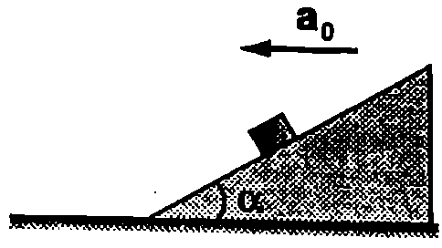
`Фиг. 6.11`
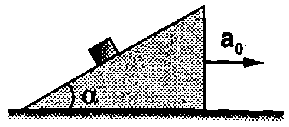
`Фиг. 6.10`
$$v_r = \sqrt{v_0^2 + v_e^2} = \sqrt{v_0^2 + \omega^2 v_0^2 t^2}.$$
Относителната скорост е успоредна на равнината на диска, т.е. тя в перпендикулярна на ъгловата скорост. Големината на кориолисовата сила, действаща на шайбата в отправната система, свързана с диска, е
$$F_c = 2mv_r \omega = 2m\omega v_0 \sqrt{1+\omega^2t^2}.$$
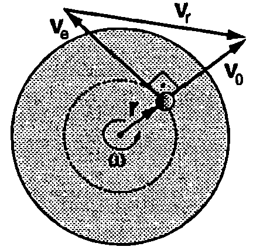
`Фиг. 6.9`
Задачи
-
Автобус се движи равноускорително на изток. Каква е посоката на инерчната сила, действаща на пътниците? В коя отправна система се измерва тази сила?
-
Реактивен самолет лети хоризонтално с постоянно ускорение. Равновесното положение на махало, закачено в кабината на пилота, е отклонено на ъгъл 45° от вертикалата. Изразете ускорението на самолета чрез земното ускорение $g$.
-
На пода на вагон, който се движи по хоризонтален участък от пътя с постоянно ускорение $\vec a_0$, е поставен сандък с маса $m$. Определете големината и посоката на силата на триене при покой $\vec f_s$, с която подът на вагона действа на сандъка. Решете задачата по два начина: в неинерциалната отправна система, свързана с вагона, и в инерциалната отправна система, свързана със земната повърхност.
-
С каква ъглова скорост трябва да се върти виенско колело с радиус $r = 15$ m, за да стане центробежната инерчна сила, действаща на пътниците, равна по големина на силата на тежестта? Земното ускорение приемете $g = 10~\mathrm{m/s^2}$.
-
Трупче е поставено върху клин с ъгъл $\alpha = 30^\circ$, който се движи по хоризонтална равнина с ускорение $\vec a_0$ (Фиг. \ref{fig:6.10}). Определете коефициента на триене $k$ между трупчето и клина, ако трупчето започва да се хлъзга по клина при големина на ускорението $a_0 = g/4$, където $g = 10~\mathrm{m/s^2}$ е земното ускорение.
-
Клинът от Фиг. \ref{fig:6.11} се движи с постоянно ускорение $a_0 = g = 10~\mathrm{m/s^2}$. Трупчето отначало е в покой и след това се освобождава. Надолу или нагоре по клина ще започне да се движи трупчето? Колко метра спрямо клина ще измине трупчето за 1 s след началото на движението? Триенето между трупчето и клина се пренебрегва. Ъгълът на клина е $\alpha = 30^\circ.$
-
Хоризонтален диск се върти с постоянна ъглова скорост $\omega$ около вертикална ос, минаваща през центъра му. Малко топче с маса $m$ започва да се движи по радиален улей от центъра на диска с постоянна спрямо диска скорости. Когато топчето се намира на разстояние $r$ от центъра на диска, определете:
а) големините на кориолисовата сила и на центробежната инерчна сила, които действат на топчето в отправната система, свързана с диска, както и големината на равнодействащата на тези две сили;
б) големината на силата, с която улеят действа на топчето.